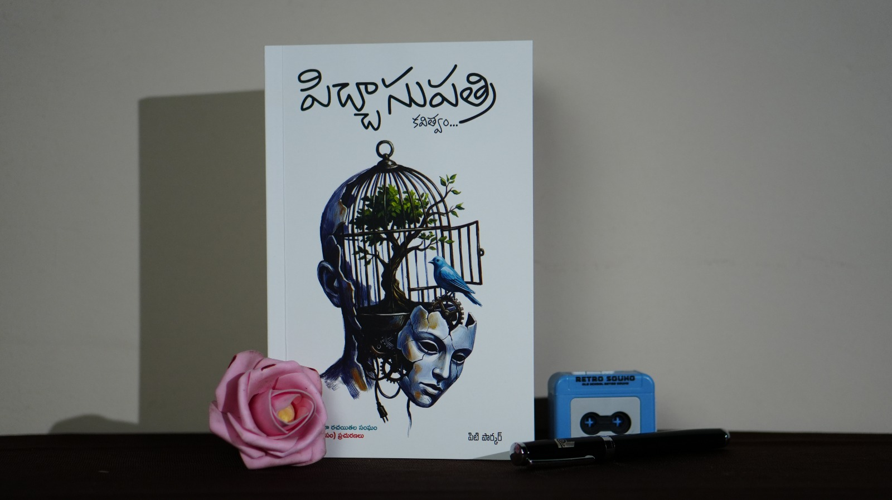
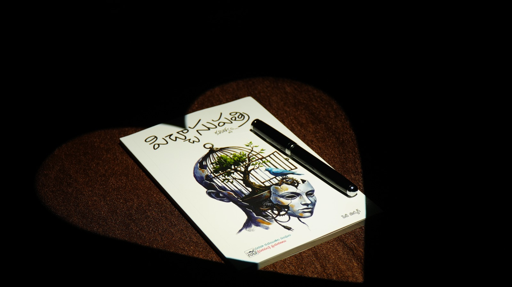
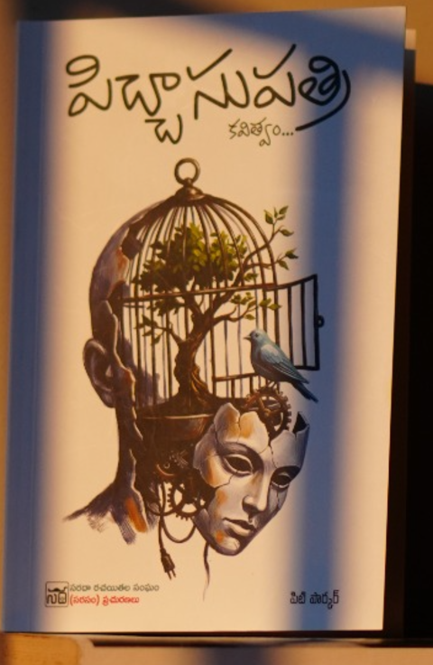

Picchaasupatriపిచ్చాసుపత్రి
PoetryA Gen-Z manifesto in verse — existential, funny and fiercely honest. Published by SARASAM Publications.
Poet · Author · Translator
The writing of Pity Parker — Telugu verse, essays, and translation from a voice that speaks plainly about the things we usually whisper.



01 The New Book
A groundbreaking Telugu poetry collection that reads like a manifesto for a new generation. Moving away from the classical tropes of romance and pastoral beauty, it is a raw, unpolished and hyper-relatable deep dive into existential dread, identity crises and the quiet psychological burdens of modern life.
A debut that won the hearts of Telugu poets — verse that laughs at the dark so you don't have to face it alone.
Told with extreme humour and unflinching honesty, Picchaasupatri is for anyone who has ever felt too much in a world that asks them to feel less.
02 The Journal
Poems, essays and unfiltered thoughts — published straight from the desk of Pity Parker.
02B Full Archive
A complete local archive of the imported blog content, ready to browse and read on the site.
03 The Shelf
Six titles across poetry, faith, fiction and language — and a body of work in translation.
A Gen-Z manifesto in verse — existential, funny and fiercely honest. Published by SARASAM Publications.
An extraordinary first book, written at the age of twenty — the beginning of the journey.
Buy on AmazonTender, thorned and lyrical — drops of rain on the thorns of everyday life.
A work of devotion and quiet conviction.
A playful master-guide to English idioms — language learning with wit.
English made approachable — the teacher's craft, on the page.
Pity Parker has translated multiple books between English and Telugu, and vice-versa — carrying voices across languages without losing their music.
04 About
Pity Parker is a poet, author and Assistant Professor of English Literature — a writer who, in his own words, decided to torture himself with words for a living.
His story began at Andhra Loyola College, where he started his tryst with English Literature. Then — for reasons still unclear to him — he went on to The English and Foreign Languages University in Shillong to earn his Master's degree, because apparently one degree in overthinking texts wasn't enough. Along the way, he qualified for NET.
At twenty, he somehow managed to write his first book, Shadruchulu, in Telugu. When most people were busy figuring out life, he was busy arguing with metaphors. Since then he has written several more — Easy English, IdioMaster, Mulla Chinukulu and I Trust in Jesus — and his recent Telugu poetry collection, Picchaasupatri, won the hearts of Telugu poets.
Beyond his own books, he is an accomplished translator, carrying works between English and Telugu in both directions — and he still finds time to wrestle with words and wonder why he ever thought being a writer was a good idea.
05 Get in touch
For readings, translation work, press, or a copy of పిచ్చాసుపత్రి — reach out. The fastest way to find Pity Parker is on Instagram or Facebook.
Tip: press Enter twice to start a new paragraph. Your formatting is kept as-is.